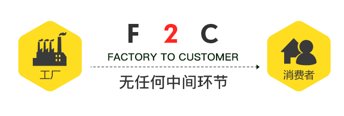
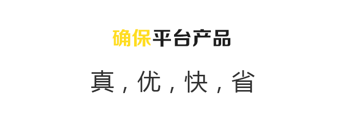
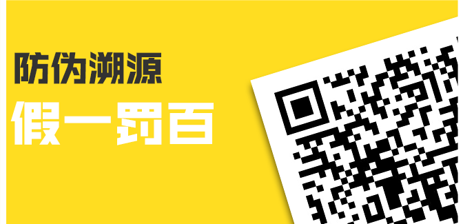

上海加缪物联网科技有限公司，一家专注于物联网深度 开发及运用的平台型企业，是中国第三次“消费升级”热 潮中诞生的全新F2C零售型电商，是目前国内唯一 一家， 在线商品全程溯源的平台提供方。
旗下的“黄雀云平台”旨在为知名品牌厂商与消费者之间 搭建一个直达的绿色通道，通过溯源技术实现从原料生产 到消费者签收，货品全程透明可追溯。
通过大数据分析和人工智能技术，实现信息精准推送、产 品定制、免费分享的新电商模式。
“黄雀云平台”严选知名厂商及一线品牌，既提升了消费 品质，又从源头杜绝了假冒伪劣；采用高效的防伪溯源技 术严加把控，可全程防范任何疏漏；成熟的F2C分销渠道 将货品及时无损地送达消费者，顾客满意度高；流通环节 做到极为简化，最大程度让利于消费者。
上海加缪物联网科技有限公司，核心团队先后参与过多个 超大型物联网项目，与“国家质量追溯与防伪数据中心” 的共建项目更加彰显技术优势，除了独有的双层二维码， 可变光二维码等外，还拥有全部的RFID芯片，RFID 读卡 器芯片，NFC芯片设计技术。在防伪溯源技术领域，上海 加缪网科技有限公司有足够的技术支撑“黄雀”全溯源平 台。
时代的脚步不可阻挡，上海加缪物联网科技有限公司在这 场变革之中，紧随潮流，紧跟政策，为自身的发展与壮大 创造了空间，赢得了时间，更为众多一线品牌开辟了一条 直通消费者的便捷通道，受到了各界的普遍欢迎与认同。